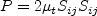

Results are shown here from 2 compressible codes
so that the user may compare their own compressible code results. Multiple grids were
used so the user can see trends with grid refinement. Different codes will behave
differently with grid refinement depending on many factors (including code order of accuracy
and other numerics),
but it would be expected that as the grid is refined the results
will tend toward an "infinite grid" solution that is the same.
Be careful when comparing details: any differences in boundary conditions or flow conditions
may affect results.
Note that this case was previously referred to as a 2D Planar Shear, but it is
more appropriately referred to as a 2D Coflowing Jet. Some of the figures associated with this
case may still have the word "shear" in them.
Two independent compressible RANS codes,
CFL3D and FUN3D, were used to compute this
coflowing jet flow with the Wilcox2006-klim-m model
(see full description on
Wilcox k-omega page). The full series of 5 grids were used.
CFL3D is a cell-centered structured-grid code, and FUN3D
is a node-centered unstructured-grid code (FUN3D can solve on mixed element grids, so this case
was computed on the same hexahedral grid used by CFL3D). Both codes used Roe's Flux Difference
Splitting and a UMUSCL upwind approach. In CFL3D its standard UMUSCL (kappa=0.33333) scheme was
used, whereas in FUN3D the option UMUSCL 0.5 was used. Both codes were run with
full Navier-Stokes (as opposed to thin-layer, which is CFL3D's default mode of operation),
and both codes used first-order upwinding for the advective terms of the turbulence model.
Details about the codes can be found on their respective websites,
the links for which are given on this site's
home page.
The codes were not run to machine-zero iterative convergence, but an attempt was made to converge
sufficiently so that results of interest were well within normal engineering tolerance and
plotting accuracy. For example, for CFL3D the density residual was typically
driven down below 10-11. It should be kept in mind that many of the files given below
contain computed values directly from the codes,
using a precision greater than the convergence tolerance (i.e., the values
in the files are not necessarily as precise as the number of digits given).
Note that in both CFL3D and FUN3D, the production term

is approximated by
- 
which is exact for incompressible flow. For this particular low-speed flow, the approximation is
very accurate.
(Previously on this page the results were reported as Wilcox2006-klim solutions, but more properly they should be referred
to as Wilcox2006-klim-m because of this approximation and the fact that the
 term is ignored in tau_ij in the momentum and energy equations.)
term is ignored in tau_ij in the momentum and energy equations.)
For the CFL3D and FUN3D tests reported below, the turbulent inflow boundary conditions used for Wilcox2006-klim-m
were the following:


The above two equations represent the "standard" Wilcox2006-klim-m boundary condition
values used by both CFL3D and FUN3D, chosen to achieve
a not-too-low level of freestream
turbulent kinetic energy, a not-too-severe rate of freestream turbulence decay,
and a reasonable level of freestream turbulent eddy viscosity of
 .
.
For the interested reader, typical input files for this problem are given here:
CFL3D V6.5:
FUN3D:
The following plot shows the convergence of the drag coefficient due to
skin friction on both sides of the thin plate between -10 < x < 0
with grid size for the two codes.
In the plot the x-axis is plotting 1/N1/2, which is proportional to
grid spacing (h).
At the left of the plot, h=0 represents an infinitely fine grid.
Both codes go toward approximately the same result on an infinitely refined grid.
Using the uncertainty estimation procedure from the Fluids Engineering Division of the ASME (Celik, I. B.,
Ghia, U., Roache, P. J., Freitas, C. J., Coleman, H., Raad, P. E.,
"Procedure for Estimation and Reporting of Uncertainty Due
to Discretization in CFD Applications," Journal of Fluids Engineering, Vol. 130, July 2008, 078001, https://doi.org/10.1115/1.2960953), described in Summary of Uncertainty Procedure,
the finest 3 grids yield the following for drag coefficient on the thin plate:
| Code |
Computed apparent order, p |
Approx rel fine-grid error, ea21 |
Extrap rel fine-grid error, eext21 |
Fine-grid convergence index, GCIfine21 |
| CFL3D |
oscillatory convergence |
0.892% |
N/A |
N/A |
| FUN3D |
oscillatory convergence |
0.410% |
N/A |
N/A |
The following plots show u-velocity (nondimensionalized by reference speed of
sound) at 3 different locations in the jet: (1) x=2.71623, (2) x=29.2468, and
(3) x=95.501.
As seen, both codes are tending toward similar results
as the grid is refined.
Using the uncertainty estimation procedure from the Fluids Engineering Division of th
e ASME (Celik, I. B.,
Ghia, U., Roache, P. J., Freitas, C. J., Coleman, H., Raad, P. E.,
"Procedure for Estimation and Reporting of Uncertainty Due
to Discretization in CFD Applications," Journal of Fluids Engineering, Vol. 130, July 20
08, 078001, https://doi.org/10.1115/1.2960953), described in Summary of Uncertainty Procedure,
the finest 3 grids yield the following:
| Code |
Quantity |
Computed apparent order, p |
Approx rel fine-grid error, ea21 |
Extrap rel fine-grid error, eext21
| Fine-grid convergence index, GCIfine21 |
| CFL3D |
u near x=3 |
0.84 |
0.047% |
0.060% |
0.075% |
| CFL3D |
u near x=29 |
1.15 |
0.137% |
0.113% |
0.141% |
| CFL3D |
u near x=96 |
3.21 |
0.019% |
0.002% |
0.243% |
| FUN3D |
u near x=3 |
oscillatory convergence |
0.002% |
N/A |
N/A |
| FUN3D |
u near x=29 |
1.78 |
0.072% |
0.029% |
0.037% |
| FUN3D |
u near x=96 |
oscillatory convergence |
0.010% |
N/A |
N/A |
The data file that generated all the above plots is given here:
convergence_w06.dat.
The u-velocity along x at y=0 from both codes on the finest grid
is shown in the next plot.
Both codes are seen to yield nearly identical results
over the entire domain.
The data file that generated the above plot is given here:
uvel_y_0_w06.dat.
The u-velocity along y at three x-stations from both codes on the finest grid
is shown in the next three plots. Again, both
codes are seen to yield nearly identical results.
The data files that generated the above plot are given here:
uvel_x_3_w06.dat,
uvel_x_29_w06.dat,
uvel_x_96_w06.dat.
This type of flow exhibits self-similar behavior far enough downstream.
The velocity can be normalized as (u-u1)/(um-u1),
where u1 is the velocity at the edge of the outer stream, and
um is the peak (centerline) velocity. When plotted against y/b,
where b is the halfwidth (location where u-u1 is half of
um-u1), the results can be compared
to the experimental data of Bradbury and Riley (J. Fluid Mech
27(2):381-394, 1967,
https://doi.org/10.1017/S0022112067000400).
In the following plot, CFL3D results are taken from the
three x-locations x=29.2468, x=64.2188, and x=95.501. The CFD results are approximately
self-similar and agree well with the experiment.
The data file that generated the above plot is given here:
normalized_u_w06.dat.
The eddy viscosity contours (nondimensionalized by freestream laminar viscosity)
from the two codes on the finest grid are shown
in the following plots (y-scale expanded for clarity). The first set of contours
are in the farfield, and the second set are near the thin plate. Results from the
two codes are nearly the same.
The data files that generated the above plots are given here:
mut_contours_cfl3d_w06.dat.gz (4.0 MB) (structured, at cell centers) and
mut_contours_fun3d_w06.dat.gz (6.1 MB) (unstructured, at grid points).
Note
that these are both gzipped
Tecplot
formatted files, so you must either have Tecplot or know how to read their format in order to use these
files.
Using the finest grid, an extracted nondimensional eddy viscosity profile at
x=29.2468 is shown below.
The data file that generated the above profile is given here:
mut_29_w06.dat <- corrected 6/30/2015.
The nondimensionalized k contours and omega contours from the two codes
on the finest grid in the farfield
are shown in the following plots (y-scale expanded for clarity).
The data files that generated the above plots are given here:
k_contours_cfl3d_w06.dat.gz (4.0 MB) (structured, at cell centers),
omega_contours_cfl3d_w06.dat.gz (4.0 MB) (structured, at cell centers),
k_contours_fun3d_w06.dat.gz (6.1 MB) (unstructured, at grid points), and
omega_contours_fun3d_w06.dat.gz (6.1 MB) (unstructured, at grid points).
Note
that these are all gzipped
Tecplot
formatted files, so you must either have Tecplot or know how to read their format in order to use these
files.
Using the finest grid, extracted nondimensional k and omega profiles at
x=29.2468 are shown below.
The data file that generated the above profile is given here:
w06_omega_k_29.dat.
Note for users of OpenFOAM.
Return to: 2D Coflowing Jet Verification Case Intro Page
Return to: Turbulence Modeling Resource Home Page
Recent significant updates:
04/05/2016 - re-named the case 2D Coflowing Jet
06/30/2015 - corrected mut_29_w06.dat file
Page Curators: Christopher Rumsey,
Ethan Vogel,
Clark Pederson
Last Updated: 11/08/2021